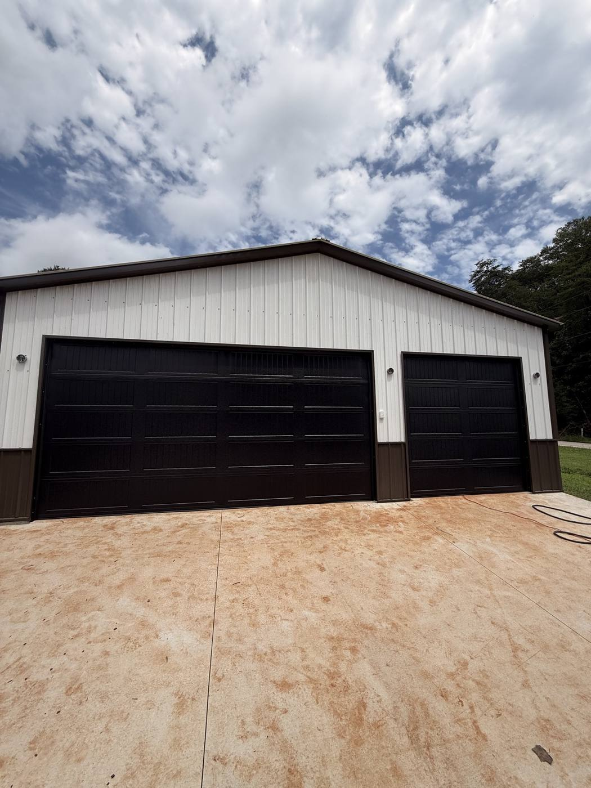

Home / Greenville County / Travelers Rest, SC
Garage door repair, new doors and shop doors in Travelers Rest — Main Street, the Swamp Rabbit Trail area, US-25 and out toward Paris Mountain.
Travelers Rest, SC · Greenville County
Travelers Rest has a little bit of everything — houses near Main Street and the Swamp Rabbit Trail, newer subdivisions, and plenty of country property with detached shops and pole barns. Viking Garage Door services all of it: residential doors, oversized shop doors and the openers that run them, with same published prices and no trip charge.
Around Travelers Rest we install and repair a lot of 10×10, 12×12 and taller doors on detached garages, pole barns and workshops. Bigger doors need heavier springs, stronger tracks and the right opener — often a wall-mount jackshaft unit when the ceiling is high or there is a loft. Metal buildings in the foothills also see more humidity and rust on hardware, so we check rollers, hinges and bottom seals on every visit.

Most Common Jobs
Insulated and non-insulated steel doors for detached garages and outbuildings.
Spring sets sized for big, heavy doors and properly balanced.
Jackshaft openers for high ceilings, lofts and shops with overhead storage.
Services & Prices
| Service | Details | Price |
|---|---|---|
| Spring replacement | Torsion springs, parts & labor included | from $290 |
| Garage door repair | Cables, rollers, track, panels, off-track doors | $150 – $350 |
| Opener installation | LiftMaster, Chamberlain & Genie — chain, belt, smart WiFi | $300 – $750 |
| New door installation | Insulated steel doors, old door hauled away | from $1,950 |
| Tune-up & safety check | Lubrication, balance, safety sensors, hardware tightening | $120 flat |
Yes. We measure the framed opening and quote steel doors sized for it, including the right track and spring setup for the headroom you have.
Yes — Travelers Rest and the surrounding Greenville County countryside are in our service area.
Usually a heavy-duty belt or wall-mount jackshaft opener. We will recommend the right one after seeing the door and ceiling.
Nearby: Garage door repair Greenville · Garage door repair Taylors · Garage door repair Greer. We cover the whole county — see garage door repair in Greenville, SC.
Call or text a photo of the problem — we will tell you what it is, what it costs and when we can be there.